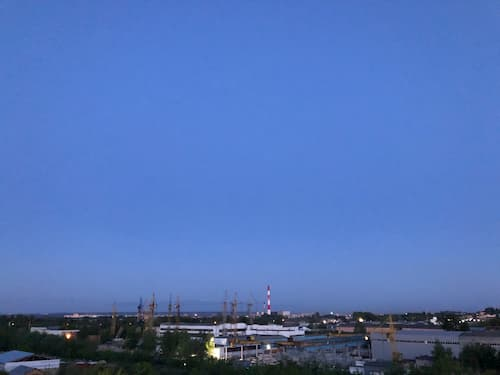
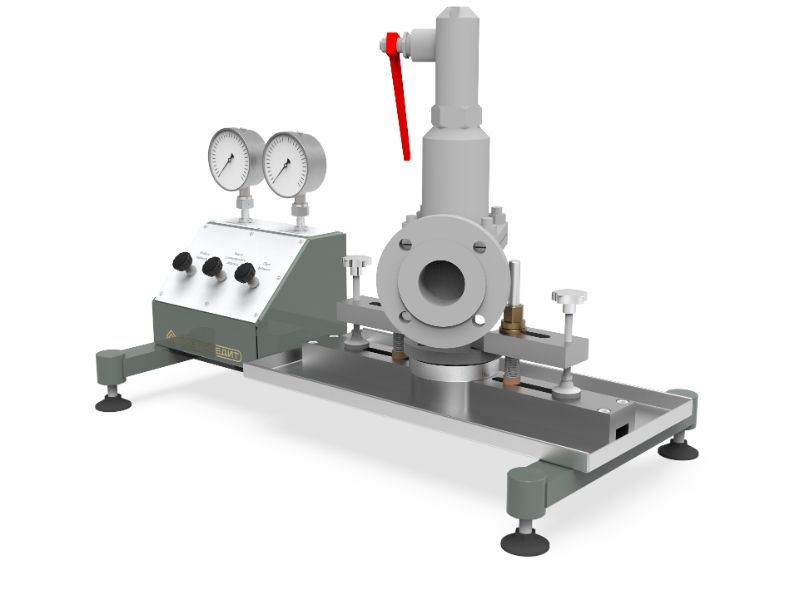
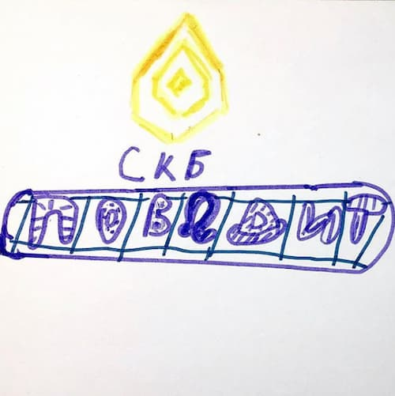
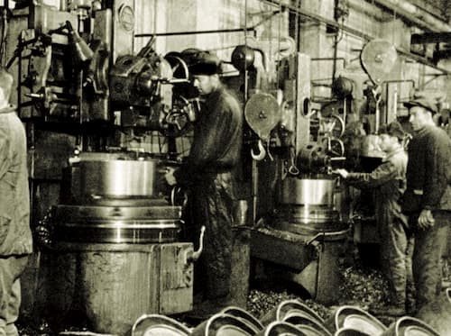
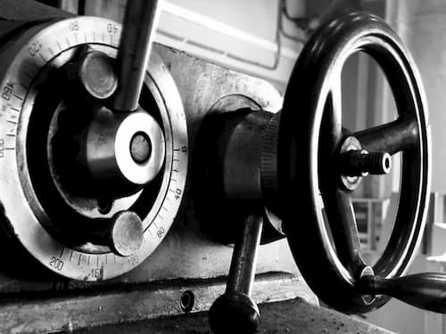

Если что-то делаешь, делай это хорошо, либо не делай вообще.
В любом деле важно ставить для себя высокую планку, быть максимально вовлечённым, трудиться с полной отдачей, чтобы не было стыдно за конечный результат своей работы.
Порой на кону стоит слишком многое: репутация компании, обязательства перед клиентами и партнерами, функционирование компании в целом.
05 августа, 2020
Рубрика «Экология»
Промышленное страхование.
Сейчас актуальна тема промышленного перевооружения предприятий, берущих своё начало в прошлом столетии, кроме того, переработка промышленных отходов является головной болью многих производств.
Разрешить эти проблемы помогут не только современные технологии, но и специалисты экологической направленности совместно с экологическим страхованием, при котором формируется резервный фонд для компенсации ущерба.
29 июля, 2020
Рубрика «Экология»
Мы решили ввести новую рубрику, в которой будем освещать наиболее интересные и значимые события по теме защиты окружающей среды, ведь это напрямую связано не только с производством и промышленностью, но и с каждым из нас.
⠀
Министр сельского хозяйства России Дмитрий Патрушев сообщил, что в правительство внесён законопроект о продукции с улучшенными экологическими характеристиками. Создана торговая марка «Зелёный стандарт» ( «The Green One») для экологически чистых сельхозпродуктов, новый бренд будет выведен на международный рынок. Кроме того, под маркировку попадают минеральные удобрения и средства защиты растений, что потребует от производителей соблюдать разработанные ГОСТы.
14 июля, 2020
Из чего складывается мнение о компании?
Каждая компания - это как человек, имеющий свой облик и характер, со своими ценностями и устоями, обладающий своей уникальностью и особой энергетикой, единый функционирующий организм.
⠀
Первое впечатление формируется при визуальном осмотре, так сказать, «встречают по одежке» - у компании это сайт, каталог и социальные сети. Можно сразу определить, обладают ли представители компании вкусом, чувством стиля, следуют ли современным тенденциям, степень экспертности в своем деле, как и какую информацию несут окружающему миру.
10 июля, 2020
Удачной разведки!
Подведены итоги очного отбора акселератора «Большая разведка 2020», в рамках которого 16 июня компания СКБ «ПОБЕДИТ» защищала свой проект.
Более 300 проектов приняли участие в дистанционных питч-сессиях по 6 направлениям: Socio&EduTech, Agro&MedTech, TechNet, Mining&Energy, Chemical&GreenTech и IT&Robotics. Изначально было подано 592 заявки на участие.
02 июля, 2020

Верное направление
Мы живем в беспрецедентное время. Динамичное развитие, безграничные перспективы, ежеминутные глобальные перемены.
Важно подстроиться под изменения, быть актуальным, создавать тренды - это является залогом движения вперёд.
Отличаться от других, менять своё мышление, пересматривать подходы к ведению дел и к окружающим людям - все это позволит найти и занять своё место в этом изменчивом мире.
23 июня, 2020

Рубрика «Новое оборудование»
СТЕНД ДЛЯ ИСПЫТАНИЙ И НАСТРОЙКИ ПРЕДОХРАНИТЕЛЬНЫХ КЛАПАНОВ ПОБЕДИТ-С-1
Стенд служит для тарирования (определения давления настройки) предохранительных клапанов, испытания узла затвора на герметичность, а также проверки манометров.
Станок представляет широкий̆ диапазон возможностей̆ модернизации под требования заказчика, совмещает компактность и высокую функциональность, при лояльной̆ ценовоӗ политике.
Ознакомьтесь с видео - подробнее о данном оборудовании проконсультируют наши менеджеры по указанным контактам в шапке профиля, на нашем сайте skbpobedit.ru много интересного - добро пожаловать!
4 июня, 2020

День защиты детей
Для каждого члена команды компания является общим детищем. Бессонные ночи, много сил, средств и энергии в него вкладываются, консультации со специалистами, каждодневное обучение для правильного с ним обращения - всё это для того, чтобы он рос и развивался, стал достойным среди остальных.
Команда СКБ «ПОБЕДИТ» желает радоваться успехам Ваших детей!
1 июня, 2020

Название нашей компании и День Победы
Победит - специальный инструментальный сплав карбида вольфрама и кобальта, отличающийся высокой твердостью, близкой к алмазу.
В СССР победит был разработан в 1929 году, где в основном использовался для режущих инструментов.
Название “победит” возникло во время битвы под Москвой в 1941 году: из сплава были изготовлены бронебойные пули для противотанковых ружей калибра 14,5 мм.
По другой версии название возникло на военных заводах в тылу, где без такого сплава невозможно было бы производить необходимое количество вооружения для фронта.
9 мая, 2020

Промышленность в новых реалиях
По итогам марта производство в России снизилось на 1,2%, всем понятно, что ситуация с короновирусом и самоизоляция всему виной.
Сложившаяся картина коснётся все сферы жизни, но, порассудив, перспективы для машиностроения вырисовываются не такие уж и плохие.
17 апреля, 2020
Движущая сила
Что движет человеком при создании чего-то нового? Мы считаем, что желание привнести лучшее в этот мир, изменить его, сделать шаг вперёд в своём развитии.
Команда СКБ ПОБЕДИТ пришла к выводу, что в силах улучшить процесс шлифования и притирки поверхностей запорно-регулирующей арматуры и создать инновационный продукт, который найдёт отклик в сфере профессионалов.
7 апреля, 2020